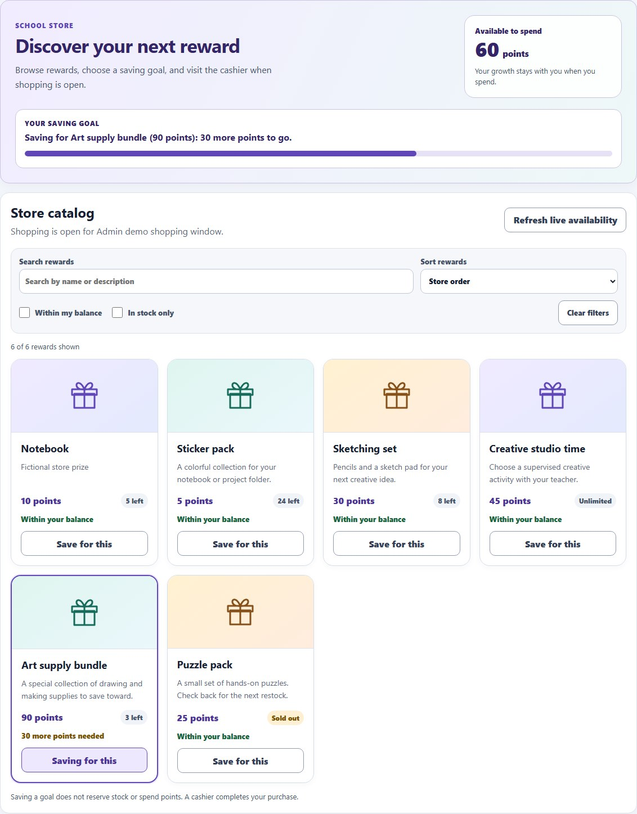
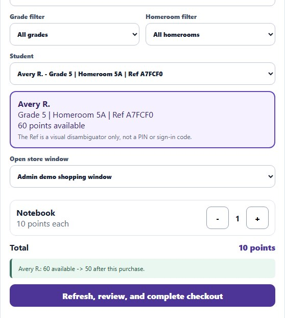

School Rewards & Store: User Manual
Part of the Leadership Hub and the Educator Tools. For how this tool sits beside the rest of the suite, see For school leaders in the AlloFlow teacher guide.
Where to start
Trying it out: choose Try the demo for fictional practice with no Google setup.
Teachers and cashiers: choose Join my school’s existing Store. Ask for the approved link; you do not create another Apps Script project. Then use section 4 for awarding or section 5 for checkout.
School administrators and technology coordinators: choose Set up a Store for my school, then follow the ten-step checklist in section 3. Sections 9 and 10 cover operations and records.
Students and families: section 6 is written for you.
1. What It Is and Who It Is For
School Rewards & Store is a school-owned points economy for positive recognition. Staff award points with a written reason, students see their balance and growth, and a store opens for a fixed window each trimester. The ledger lives in a protected Google Sheet that a managed school account owns, the portal runs as a Google Apps Script web app restricted to your Google Workspace domain, and the AlloFlow Store launcher keeps its address and setup checklist on the connecting device. Classroom tools separately retain their pseudonymous lesson state. It is a pilot design for one school, not a district platform, and it stays separate from AlloHaven experience points inside AlloFlow.
| Role | Rewards | Store | Where they work |
|---|---|---|---|
| Student | Own balance, growth levels, the reasons staff wrote, a prize goal. | Sees the catalog and whether a prize is within balance; does not check out. | The portal, or just the balance emails. |
| Staff | Award points to one student or a group; undo their own award within fifteen minutes. | None. | The portal Award tab. |
| Cashier | None. | Complete checkout at the register against the live balance and inventory. | The portal Store tab. |
| Administrator | Everything above plus corrections, categories, roster, staff access, guardian connections, settings, integrity and reconciliation. | Catalog, inventory, shopping windows, refunds. | The portal Admin tab; setup inside AlloFlow. |
Roles come from the roster and the staff list on the server side. Signing in with a school Google account decides what you can see; nothing in the link itself grants access.
The two numbers every conversation comes back to. An award raises a student's available balance and their growth level in that category at the same time. Checkout spends the balance; nothing spends growth. When a student asks why their points went down but their level did not, this is the answer.
If you get lost, press Help. The Help button in the portal header opens the same answers this manual gives, shortened to a screen and filtered to the role that is signed in. It is the fastest way to settle a question at the register or in a staff meeting without leaving the portal.

2. Choose Your Starting Path
Inside AlloFlow, open Educator Tools → School Rewards & Store, or Leadership Hub → School Rewards & Store. Choose the path that fits your role before opening technical setup. The same three choices are available from the local AlloBot setup guide.
Try the demo
Explore with fictional data. No Google setup or real student records are needed. Use the public practice portal to rehearse an award and a purchase, then reset. All roles, balances and delivery are simulated. More practice controls are described below.
Join my school’s existing Store
For teachers and cashiers: use the Store your school has already approved. You do not need to create an Apps Script project.
- Get the approved Store link. Ask your school administrator for the address ending in
/execand confirm your staff or cashier role. Keep the address, credentials and student details out of AlloBot chat. - Save the address on this device. Paste it into the Store connection field and choose Save address. This saves a launcher address only; it does not sign you in, grant access or verify the deployment. If you edit an existing address, choose Save address or Discard changes before opening the Store, opening its deployment check or sharing its link. Discard changes restores the saved address. Saving a blank field does not disconnect; use the separate Disconnect action when that is intended.
- Open your school’s Store. Opening requests a new tab; the launcher cannot tell whether the tab opened or Google accepted the account. Look for the new tab, or use the direct fallback link shown after the attempt. Use your own managed school Google account. If access is denied, ask the administrator to check your account and role; do not create a replacement Store. The collapsed Help opening your Store section offers five local troubleshooting topics.
- Confirm your school and role. Read the separate deployment check with the administrator. Teachers award, cashiers check out, and students see only their own records. AlloBot cannot see or certify that Google page.
Set up a Store for my school
For the school administrator or technology coordinator. This is a reviewed school-wide setup, not something every teacher repeats. Agree on ownership and district review, use the existing handoff packet when IT will do the technical work, then follow all ten setup steps. Inside the signed-in Store, finish the first-week checklist before inviting routine use.
Ask AlloBot for setup guidance
In teacher AlloBot, type Help me set up School Store. Choose Try the demo, Join my school’s existing Store, or Set up a Store for my school. The supported setup request is handled locally and shows the shared guide; an explicit guide action opens the existing School Store panel or the relevant manual section. It does not send the setup request to AI, handle student data, authorize Google permissions, create a project, run setup, deploy code or write to the points ledger.
Enter approved configuration only in the setup form and the approved URL only in the connection field. Ask the technical owner about blocked access. A chat answer, copied file or checked box is not evidence that Google access or district approval is complete.

Practice first
Before any Google setup, and before a staff meeting, open the practice portal from the panel's Launch card (Practice with fictional data) or through the public practice page. It is the real portal running on a fictional ledger in your browser: awards, group awards, undo, checkout, receipts, refunds, and the student view all work, and nothing reaches a real ledger. A bar at the top switches the role (staff, cashier, administrator, student), picks a scenario (a small school in preview, a shopping day with the store open, a large school), and offers Reset data to start clean. The page opens with a short introduction and a Demo guide: a five-minute walkthrough for presenting the system to administrators. The tour starts only when you press Start the tour, so the overview stays still while you talk. The data persists in that browser between visits, so a mistake made in a staff meeting can be undone or reset without consequence.
![The practice page. A dark purple bar across the top reads Practice mode, fictional data in this browser only, with Role Staff, Scenario Small school, and buttons for Customize, Start the tour, Demo guide, Reset data, and Manual. Below it a card titled Recognize effort, build progress, shop with points introduces the roles, with the Five-minute administrator demo expanded into six numbered steps. Under that, the real portal header shows Practice Elementary Rewards, a STAFF badge, the language menu, and a Help button.](school-rewards-manual-assets/09-practice-portal.jpg)
You do not need to customise anything to practise: pick a scenario and press Start the tour. Customize opens a panel for making the practice school look like yours: the school name, number of students, store status, starting points, the recognition categories and prizes as simple rows, and the tour steps as cards. Each card has a role, a tab to open, a control to highlight chosen from a list, a title, and a sentence or two; steps can be added, reordered, or removed, and Use the built-in tour puts the original back. Nothing has to be typed in a technical format. Apply and reload rebuilds the fictional ledger from those settings; Export settings and Import settings move the whole practice set, tour included, between schools as one file. The tour runs the steps for the current role, so a staff meeting can run the staff tour while cashiers run theirs at the register. Choosing Español in the portal's language menu switches the practice bar, introduction, demo guide, and tour as well, so a bilingual staff meeting can run the whole page in Spanish.
- Confirm district review and the managed account that will own the ledger. This summary is for the school setup owner; teachers joining an existing Store use the approved link.
- Create the private Apps Script project and paste the four files from the copy controls.
- Run the one-time setup using the function the panel generates from your school name, domain, year, and growth thresholds.
- Deploy as a web app restricted to your Workspace domain and paste the deployment URL into step 9.
- Read the deployment check and test each role with approved fictional accounts before sharing the staff link through the school's approved channel.
Section 3 walks through each step. District review and technical ownership come before authorizing the project.
Separate local guided demo
A presenter with their own AlloFlow repository checkout and its existing dependencies can run npm run demo:alloflow from that repository. Open the address printed by the running presentation server on that same computer. A localhost address works only while that person's local server is running; it is not a public demo link for colleagues. For a link others can open without a local server, use the public practice portal above.
The local walkthrough combines a prepared fictional class, an explicitly reviewed 5-point recognition, the student balance, and one 10-point Notebook purchase: 60 → 65 → 55 points when each action is completed once. It runs the actual Store rules against in-memory fictional services. Switching roles is a simulator, not Google sign-in. Reset restores the fictional records and prepared class links; reload older tabs after a reset.
After the local demo's checkout, Preview student email displays the captured generated receipt, including its formatted and plain-text versions. It is labelled DEMO EMAIL — NOT SENT: no message is delivered. This preview is specific to the local guided demo and does not establish live email delivery, district access, browser microphone support or printer operation. The public practice page is a separate rehearsal with its own supported features.
3. Setup, Step by Step
Who completes this: the school's administrator or designated technology coordinator, after district review. Teachers and cashiers with an existing approved Store should use Join my school’s existing Store.
The ten-step checklist is resumable on this device when browser storage is available. Copy steps complete when a copy succeeds, and manual checks record the operator's own confirmation. None of these local indicators automatically inspect the separate Google project.
If the panel cannot save setup settings: heed its visible browser-storage warning. Setup-form and checklist changes are kept in this tab only and may be lost on reload. Use Retry saving to save the current state once browser storage is available. If saving an address or disconnecting fails, the previous saved address stays in place; an edited new address remains unsaved and must be saved or discarded before opening, checking or sharing. Retrying local storage does not rerun setup, change Google permissions or verify a deployment.
Scroll the table sideways to read all three columns.
| State | What it establishes | What still needs a person |
|---|---|---|
| URL saved | A valid-looking launcher address is stored on this device. | Open the approved deployment, sign in, and check the school and role. Saving is not deployment verification. |
| Human-confirmed deployment verification | The operator records having read the deployment check and tested intended roles. | Repeat checks after relevant account, source or deployment changes. AlloBot cannot certify the separate page. |
| District review | The school follows its own approval process for ownership, code, permissions, storage, mail and retention. | Keep that review with the technical owner. A local checkbox does not grant Google permission or prove approval. |
Handing it to IT. Steps 2 to 8 happen in the Google Apps Script editor, and most principals delegate them. Fill in the school details under step 7, then use Download instructions for IT at the top of the checklist: one file with the eight steps in plain words, the four sources with copy buttons, and the setup function. Copy as email text gives the same steps with links to the sources. The coordinator sends back the link ending in /exec, which you paste in step 9.
- Confirm district review and the managed account. The school or district reviews
Code.gs,Portal.html,Index.html, andappsscript.json, plus Apps Script use, Sheet storage, mail sending, and retention. Sign in to the managed Google Education account that will own the ledger, the mail trigger, and the private print-model folder. A durable role account is safer than a personal one. - Create the private project. Open script.new, confirm the account again, and name the project
AlloFlow School Rewards. In Project Settings turn on Show appsscript.json manifest file in editor. - Replace Code.gs. Code.gs is already open with a few starter lines. Click inside it, press Ctrl+A, paste the source over it, and save with Ctrl+S.
- Add the Portal page. In the Files list on the left click the + beside Files and choose HTML. Type
Portal(the editor adds .html), press Enter, select the starter lines, paste, save. - Add the Index page the same way, named exactly
Index. It only wraps the Portal page. - Replace appsscript.json. The manifest restricts the web app to your domain, runs it as the deploying account, and declares the Sheets, Drive, mail, and trigger scopes.
- Run the one-time setup. Fill in the school name, allowed domain, academic year, and growth thresholds; leave the default recognition categories on unless the school has its own. Copy the generated
runInitialSchoolRewardsSetupfunction, paste it at the end of Code.gs, choose it in the function menu, and click Run. The technical owner checks the requested permissions against the district-approved source and manifest before authorizing. If Google shows a warning or district policy blocks access, stop and consult IT; do not bypass the warning. The account that runs it becomes the first administrator, and the allowed domain must match its email domain. Staff, cashiers, and students are added later inside the portal. - Deploy. Deploy → New deployment → Web app. Execute as Me; who has access: users in your Google Workspace domain, never Anyone. Copy the URL ending in
/exec. Any later source change needs a new deployment version. - Save the approved deployment URL. Only an HTTPS
script.google.comaddress ending in/macros/s/…/execis accepted. Saving it on this device does not publish code, grant access or establish that the deployment works. - Verify with approved test accounts. Open the deployment check; read Deployment check passed with the expected school, domain, script version, and role. Then test each intended role with approved accounts and fictional records. Record verification only after those checks; the local checkbox is human confirmation, not automatic evidence from AlloBot.

Sharing with staff. Share the approved portal address or its QR code through the school's approved staff channel after verification. The address carries no sign-in credential: the managed account, roster and staff list still determine access. Do not include student information in links.
If the clipboard is blocked in your window, the copy control shows the verified source pre-selected in a box; press Ctrl+C (Cmd+C on a Mac) and paste it into the editor. Copying from the box marks the step done.
4. Awarding Points
Training day: the printable quick cards hold this section and the next on one page each, for staff and for cashiers, plus a one-page card for students and families.
Staff award from the portal Award points tab. Students appear as tiles with their name, grade and homeroom, a short reference code, and available points. Tap a tile to select the student; the confirmation panel repeats who you chose. Pick a recognition category, enter the points, and write what the student did. The explanation is required and is the sentence the student will read, so write it to them.
Finding a student. Type part of a name, grade, or homeroom in the search box; the tiles narrow as you type. The grade and homeroom filters narrow them further. Two students with the same first name are told apart by grade, homeroom, and the short reference code on each tile, and the confirmation panel below the tiles repeats all of these for the student you chose. Tapping the selected tile again keeps it selected, so a second tap never silently clears your choice. Read the confirmation before you record.

- Group award. Tick Award the same recognition to several students, then tap tiles or use Select all shown after filtering by grade or homeroom. Up to sixty students receive the same category, points, and explanation. Each student is recorded as their own award, so a lost connection and an exact retry never double-award, and any student that could not be recorded is listed while the rest stay recorded.
- Undo. After a single award the notice offers Undo. The staff member who recorded an award can reverse it for fifteen minutes; the reversal is an ordinary audited entry. After that, an administrator corrects it.
- Categories. The default HOWL categories, or the school's own, each carry a description that appears under the category menu. Inactive categories keep their history but cannot receive new awards.
- Growth levels are computed from lifetime net awards in each category. Store purchases never lower them.

5. The Store: Windows, Checkout, and Receipts
Find a reward and plan a purchase
The Store opens with a reward gallery and an Available to spend balance. Students browse the full-width catalog; cashiers see a selected student's balance alongside checkout. Points reserved for active Print Lab requests are listed separately and cannot be spent again at the register.
- Use Search rewards to find a name or description. Sort rewards puts items in store order, point order, or alphabetical order.
- Students can select Within my balance. In stock only hides sold-out prizes. The result count tells you how much of the catalog is showing; Clear filters restores it and moves keyboard focus to search.
- Read the price and stock label. Unlimited means the catalog does not impose a finite stock count. A saving goal can stay selected while a prize is sold out; it does not reserve a future item.
- Choose Refresh live availability after a new award or a stock change. The balance, saving progress, and affordability filter update together. A cashier's existing cart is retained while searching and refreshing.

Checkout remains a reviewed action
Shopping happens inside a trimester window that an administrator moves through Draft, Preview, Open, Closed, and Archived. In Preview, students see prizes and what they can afford; in Open, cashiers can check out. Configured start and end times fail closed outside the window.
- Checkout is done by a cashier at the register in two steps. First the cashier chooses and verifies the student, picks the open window, and builds the cart while watching the available balance and the stock on each prize. Then Refresh, review, and complete checkout refreshes the live balance, window, and inventory and shows a final confirmation with the points before and after; nothing is charged until the cashier confirms. If availability changed, the cart is kept and the affected prize is highlighted for review.
- Open is not always open right now. A window whose status is Open only sells between the start and end times it was given. Outside those times the Store tab says so in plain words (for example that shopping has not started yet and when it opens) and checkout stays closed; nobody needs to guess from the status alone.
- Receipts are itemized, shown on screen, and emailed to the student's managed address. If email fails, the on-screen receipt can be printed and an administrator resolves delivery later; the purchase itself is complete.
- Refunds are administrator-only and restore points and finite inventory for the whole order.
- Inventory is an append-only movement history: creating a prize, adjusting stock, sales, and refunds each leave a record, and a stale stock version is refused rather than overwritten.

| The note reads | What is true | What a cashier does |
|---|---|---|
| Shopping is open for Trimester 1. | The window is Open and the current time is inside its start and end times. | Check out. |
| Trimester 1 is set to Open, but shopping has not started yet. Checkout opens … | The window is Open but its start time has not arrived. | Wait; the time shown is when checkout opens. |
| Trimester 1 has passed its end time, so checkout is closed until an administrator changes the window. | The window is Open but its end time has passed. | Stop and ask an administrator; do not work around it. |
| Previewing Trimester 1. Checkout remains closed. | Students can see prizes; nobody can buy. | Nothing to do at the register. |
| No shopping window is open. | No window is in Preview or Open. | Nothing to do at the register. |
Shopping day at a glance
The day before
- Set the window to Open with the real start and end times; confirm the Store tab says shopping opens tomorrow, not that it is open now.
- Check each prize's stock in the inventory card and adjust with a reason.
- Confirm the cashier can sign in and sees the Store tab.
On the day
- The Store tab reads Shopping is open for …. If it says anything else, stop and ask an administrator.
- Choose and verify the student, build the cart, then Refresh, review, and complete checkout; confirm only after reading the before-and-after points.
- If a request times out, keep the screen and do not resubmit.
Afterwards
- Set the window to Closed.
- Review unresolved receipts under Progress & activity.
- Download the aggregate reconciliation from Admin setup and file it.
The repository README carries a shopping-day runbook with the go/no-go review, the day-of routine, and what to do when a request times out. Follow it as written: the standing rule is never to resubmit an ambiguous request with a new key.
6. For Students and Families
A one-page version of this section, written for a student or a parent, is in the printable quick cards.
Students do not need the portal to take part: balance emails arrive on the schedule the school sets. A rostered student who opens the portal with their school account sees only their own balance, growth, recent recognition, and the prize catalog.

- Two numbers. My available-to-spend balance is what a purchase can use. Growth points earned and the level bars count every recognition in each category and never go down; shopping spends points without undoing growth.
- Latest recognition shows the five most recent awards with the category and the sentence staff wrote. The full history is under Progress & activity.
- Save for this marks one prize as a goal in Overview and Store. The progress bar shows how much of its price your available balance covers; the text names the points still needed. Select Saving for this again to clear it. Saving a goal does not reserve stock or spend points; a cashier completes the purchase. The preference stays in this browser and is scoped to the student, school, and academic year.
- Language. A menu in the header switches the student surfaces between English and Spanish; the choice is remembered on that device and defaults to the device language. When a signed-in student chooses a language, the repository saves it too, so balance emails to that student arrive in the same language and a new device picks it up on sign-in. Section 11 says what is and is not translated.
- Families. Where a school has set up reviewed guardian connections, guardians receive bounded digests of positive progress. Digests omit staff notes and transaction-level reasons on purpose; the detailed view belongs to the signed-in student.
7. Connecting to the Classroom: Worksheet and Roster Bridge
Classroom sessions in AlloFlow use codenames; the Store maintains its canonical school student records. The worksheet and CSV template below help staff prepare work without automatically sending points. Reviewed class links add an optional, separately approved identity workflow. Codenames and opaque IDs are pseudonymous, not anonymous; check that they do not contain real names.

- Recognition worksheet. During a live class session, recognition given in AlloHaven is summarised here by codename with the reasons and counts. A teacher awards it in the portal by picking the student, or with a group award when the reason is the same. Nothing is sent to the ledger automatically. The worksheet keeps recent sessions on this device (codenames only, the last forty sessions or ninety days), so a teacher who awards weekly sees a Sessions column and totals across those sessions rather than only the class on screen.
- Classroom roster bridge. Exports the teacher's roster groups as a CSV template: the group becomes the homeroom and the codename a cross-reference column, while first name, last initial, grade, and managed email are left blank for an administrator to complete from the SIS before importing in the portal's Admin tab. The importer ignores the two extra columns. Nothing leaves the device in this step.
Optional reviewed class links and Classroom import
- For an established AlloFlow class, use the Teacher Portal's Store review file. It exports the existing class ID, learner IDs and codenames only. Preserve these stable identities for updates; do not regenerate IDs to resolve a conflict.
- After separate district review of mapping and historical retention, a Store administrator enables reviewed class links. They manually match each intended learner to an existing Store student, choose the staff grants, preview the exact changes and confirm. No first-name or email guessing is used.
- Granted staff load the class and codename in the Store, resolve the school student, review that identity, and use it in the ordinary award form. Lookup and form filling do not record points; the existing award confirmation remains required.
The mapping stays in the school repository, outside the lesson roster and AI prompts. Historical associations remain retained; suspended or omitted links stop current lookup without rewriting history. A lost save response requires the original unchanged request and retry key. See the class-link guide for review and recovery.
The separate Google Classroom import helper requires its own district-approved OAuth configuration. It reads an explicitly selected taught class and temporarily shows names beside codenames for review; its download excludes names, Google IDs and tokens. It creates a new identity set for a new or empty AlloFlow class, not repeat synchronization for an established class. It neither creates Store students nor grants Store roles. Classroom, Store, and Educator Evaluation permissions remain separate.
Typed recognition and optional on-device dictation
In the signed-in Store, load a reviewed class, select one class and an active recognition category, then type an exact-codename request such as give Calm Otter 5 points for helping. Choose Review typed recognition, check the canonical school student and every detail, then choose Use this student in the award form and confirm the award separately. The local parser supports bounded English and Spanish commands. The explanation does not select a category, and unknown or ambiguous learners are not guessed.
AlloBot's supported typed award request offers an explicit clean Store launch without transferring the request. Re-enter it inside the Store; keep real student information out of ordinary chat. The typed-recognition guide covers limits and exact pending retries.
Start on-device dictation is optional and dedicated to this Store draft. With a class and category chosen and an empty request, explicitly start one capture in English (United States) or Spanish (Spain). It requires secure-page local speech support and an already installed language pack, ends within 15 seconds including the readiness check, and fills editable text only. Review misheard words and follow the same typed review and separate award confirmation. Cancel or change context to discard unfinished capture.
When local speech is unavailable or permission is denied, type instead. There is no cloud fallback or automatic language-pack installation. The ordinary AlloBot microphone and device dictation are not covered by this local-only gate. Real microphone support in a particular Apps Script deployment remains unverified; the dedicated dictation guide explains the browser boundary.
8. The 3D Print Lab
Students can submit a 3D design, receive a staff-reviewed point quote, and reserve points until the finished piece is collected. A new deployment starts with the tab hidden. An administrator enables it under School settings after arranging the school's printer and review process. Existing records remain in the ledger when the tab is hidden; visibility does not grant or remove account permissions.
Describe a piece, then edit it
Start in 3D Print Lab, or bring a supported design from Geometry World, Architecture Studio, or Art Studio's Sculpt 3D. For a simple object, try a description such as A small turtle with a broad flat base and a rounded shell, then choose Create editable recipe. Example descriptions help you get started. AI generation requires the configured provider; a description is a starting draft that you inspect and revise.
Use your device's keyboard dictation if you prefer speaking, review the recognized words, and then submit the description. There is no built-in microphone recorder. In Print Lab, Edit this model in Sculpt 3D opens primitive-based models for part-by-part changes. Sculpt keeps manual controls and Undo; its Print Lab button returns the edited recipe. Physical scale and AI-use disclosure travel with that round trip. A changed model needs a new preflight and staff review.
Review strength and reduce material use
Open Materials to consider load direction, layer orientation, thin parts, joints, walls, supports, and the intended use. Compare two runs from the school's slicer using grams and print minutes. For example, 20 g to 14 g is 6 g less material (30%), while 100 to 120 minutes is 20 minutes more (20%). The comparison helps discuss a tradeoff; it does not alter the model, school quote, point balance, or print job.
The built-in estimate is a rough scenario with an assumed shell fraction. It is not a slicer result or a reliable upper bound on filament use. Preflight can identify mesh, scale, and printer-fit problems, but it does not establish load capacity. Print Lab does not perform structural simulation, automatic hollowing, or topology optimization. Staff must inspect the actual sliced layers and test a prototype where strength matters. Display pieces are a useful starting point for demonstrations.
Follow the private school review path
- Student: inspect scale and preflight, export the review handoff and model, then submit the matching files through the school Print Lab tab. Review the AI-use disclosure and requested material.
- Staff: download the exact uploaded model for review. Inspect its file match, physical dimensions, and slicer preview, then record the offline review evidence. Quote fields stay locked while asset verification and its refresh finish.
- Staff: approve a point quote or return the request with correction guidance. The student reviews the current quote and confirms it; confirmation reserves points rather than spending them. A changed quote requires a fresh review.
- Staff: advance the request through the queue, printing, and ready states. These are workflow records; they do not send commands to a printer. Fulfillment spends the reserved points once. Cancellation releases the reservation; an administrator can refund a fulfilled print.
Model files stay in school-managed storage. Students do not receive Drive links to private assets. If storage access cannot be verified, stop and have the deployment owner review it. The package README contains the full staff runbook.
9. Administration
First-week checklist. The top card on the Admin setup tab works itself out from the ledger: staff and cashier members, students on the roster, categories, a prize, a store window in preview, the first award, and the first checkout. Nothing is ticked by hand, and each open line names the card that completes it and carries a button that opens that card or tab. These are recorded-activity checks, not proof that every intended role has been tested: an administrator can record an award too. Separately verify the intended staff, cashier and student accounts with approved fictional records before routine use.
How the tab is laid out. Admin setup opens with the checklist and School settings expanded and every other card collapsed, so a new administrator meets two cards rather than nineteen. The section links at the top expand a card, scroll to it, and move keyboard focus to its heading. Adjust stock on a prize opens the separate inventory card, because editing a prize never changes its stock.
Answering a records request. The Admin setup tab has a Records requests card. Download this student’s full record produces a file with every row the repository holds about one student, which is what a parent or district request usually asks for. Redact permanently replaces that student’s name, school email, and the words staff wrote about them with a placeholder, and parks the account so it cannot sign in. Points, dates, and record ids stay, so balances still reconcile and the audit check still passes.
Do not delete rows in the spreadsheet. The audit trail is a chain in which each entry carries the fingerprint of the one before it. Removing a row breaks that chain permanently, and the integrity check will report a break from then on with no sign of what caused it. Redaction is the supported path because it edits in place and adds an entry, which extends the chain instead of breaking it.
What redaction cannot remove. Audit entries the student’s own account created still carry that address, because rewriting them would destroy the tamper-evidence the chain exists for. Both the export and the redaction tell you how many such entries there are, so the school can decide what its schedule requires.
Roster import. The Student roster card shows two example rows above the file chooser and offers a blank template to download. Fill one row per student in Sheets or Excel, save as CSV, and import up to 500 rows at a time.
![The Admin setup tab. Below the tab strip, three rows of section links such as First-week checklist, Student roster, Staff access, Prize catalog, Inventory adjustment, and Trimester reconciliation. The First-week checklist card reads 1 to go, with seven ticked lines and one open line, The first checkout has happened, carrying an Open store button. Beside it the School settings card shows the Print Lab checkbox and a Save settings button. Below, Student roster, Storage and retention, Academic year, and Records requests are collapsed with Expand buttons.](school-rewards-manual-assets/11-admin-checklist.jpg)
- Student roster. Add, edit, deactivate, or reactivate students; import a CSV with
firstNameandemailplus optional last initial, grade, and homeroom, validated as a whole before anything is written; or preview and apply a provider-neutral SIS snapshot. - Staff access. Staff, cashier, and administrator roles by managed email; the last active administrator cannot be removed.
- Prize catalog, inventory, categories, windows. Catalog edits never change stock; stock changes are separate reviewed adjustments with a reason.
- Balance emails and guardian digests run as bounded, resumable mail runs with a signed outbox; an uncertain delivery is never retried automatically.
- Operations integrity, reconciliation, and the audit chain. Read-only integrity issues, recovery for a valid pending operation only, aggregate reconciliation after each window, and
verifySchoolRewardsAuditChain()from the editor. - School settings currently holds the Print Lab visibility switch.
Closing the academic year
The Academic year card on Admin setup closes one year and opens the next. Check what closing would do reports how many students hold points and whether anything is in progress; it writes nothing. Closing archives a summary row for every student, then either resets balances to zero or carries them forward, whichever you choose.
A reset is not an edit. The tool appends one closing entry per student, so the ledger stays append-only, last year’s awards are still readable, and the audit check still passes. Growth levels are not affected by closing a year: they count recognition in each category across a student’s whole time at the school, so a year close resets what a student can spend without erasing what they have grown. If a school wants levels to restart each year as well, that is not something the tool can do today. Closing is refused while a shopping window is open or a student has points reserved for a print request, so nothing is stranded mid-transaction.
Storage and retention
The Storage and retention card reports how much of the spreadsheet is in use and which sheets are largest. The ledger and the audit trail are permanent by design and are never trimmed; they are the record. Request records are different: they are short-lived receipts that stop a retried click from acting twice, and once settled and older than the retention window they serve no purpose. Trim settled request records removes only those, and only ones that finished cleanly. Anything still in progress is kept, because recovery needs it.
A Google spreadsheet holds ten million cells. A school will not approach that for years, but whole-sheet reads slow down long before the limit, so it is worth checking once a year, at the same time as closing the year.
10. Privacy, Records, and Boundaries
- Where data lives. Names, managed emails, balances, roles, and reasons live in the school-owned Sheet and Drive folder. The AlloFlow Store launcher stores the URL and setup checklist on the connecting device. Classroom tools separately hold pseudonymous lesson state, and approved review files contain the specified codenames and identifiers.
- Who can see what is decided server-side from the roster and staff list after Google sign-in. Students see only themselves. Staff never see receipts.
- What not to write. Reasons are student-facing. Do not put disability, discipline, behaviour narratives, protected-category labels, or other sensitive information in a reason or a prize description.
- Corrections are entries, not edits. The ledger is append-only; an undo or correction is a new reversal entry, and every mutation is journaled and audited with a tamper-evident hash chain.
- Classroom and Store identity. Worksheet and review-file exports contain codenames and the specified lesson identifiers. The optional reviewed link maps them to existing school students only inside the Store repository. It is not automatic Classroom synchronization, a shared OAuth grant or permission for AI to receive student data.
- Records policy. Retention, export, and deletion follow the district's schedule. This package is technical infrastructure; it is not a FERPA or local-policy determination, and this manual is not legal advice.
11. Themes, Phones, Languages, and Accessibility
- Themes. Inside AlloFlow the panel follows the app's theme, including the high-contrast theme. The portal follows the device: a dark colour scheme and a request for more contrast are both honoured, and reduced motion turns off transitions.
- Phones. Below 760 pixels cards stack and the portal normally puts navigation at the bottom. On short screens, including a landscape phone, navigation stays in the page so it does not cover the form. Store controls have clear focus outlines and larger touch targets; quantity and saving-goal changes keep keyboard focus in place.
- Built-in help. The Help button in the portal header opens a guide inside the portal: the two kinds of points, who does what, and the questions each role asks most, with links to this manual, the quick cards, and the practice page. It shows only the sections for the signed-in role, is translated with the rest of the portal, and works when the school network blocks outside links.
- Languages. The header menu lists every language the portal ships. Spanish is complete: every screen a student, teacher, cashier, or administrator sees is translated, including the store, the admin cards, and the print lab. A language that is only partly translated shows its coverage beside its name, so a partly translated portal never looks like a finished one, and any string without a translation stays English rather than breaking.
- How languages are added. The portal runs inside the school's own Apps Script project, so it cannot use the language packs the rest of AlloFlow uses. It keeps its own catalogue instead, at
apps_script/school_rewards/portal_strings.json, with one file per language beside it. Adding a language is a translation file, not a code change;lang/SCHOOL_REWARDS_PORTAL_TRANSLATION_HANDOFF.mdlists exactly what is left to translate and what must be left alone. Languages beyond English and Spanish download the first time someone picks them, so a school network that blocks the AlloFlow CDN still gets those two. - Emails are not the portal. Balance statements are written by the repository, not the portal, and exist in English and Spanish only. A student whose portal is set to another language still receives English email. Guardian digests are English.
- Keyboard and screen readers. Tabs and panels use a tab and tabpanel relationship, tiles are radio or checkbox controls with visible focus, notices are live regions, and the panel inside AlloFlow holds focus and returns it when closed. Contrast pairs in every theme are checked against the WCAG AA ratio in the test suite. Automated checks are one layer; test with the devices and assistive technology your staff actually use.

12. Troubleshooting
Help opening your Store
In the AlloFlow Store launcher, expand Help opening your Store for these five fixed local topics. It starts collapsed and does not inspect a Google page, send the request to AI, collect student data, grant access or change settings. Keep approved addresses in the connection field and never put passwords or student records in chat.
- Nothing opened in a new tab
- An opening request is not confirmation that a new tab appeared. Check your other tabs, then use the direct fallback link shown after your attempt. If your browser or district blocks it, ask your technology coordinator about the approved browser settings. Do not bypass a Google or district security warning.
- Google asks me to sign in
- Use your own managed school Google account and the school-approved Store link. Being signed into Gemini or a personal Google account does not grant Store access. If the wrong account appears, use the account-switching method approved by your school; do not share passwords or accounts.
- I can sign in, but access is denied
- Ask the Store administrator to confirm the approved deployment, allowed school domain and your assigned role. A teacher or cashier needs the corresponding staff access; students use their own managed identity. The launcher cannot grant a role, and creating another Store will not fix access to the existing one.
- My Store link will not save, or looks wrong
- Ask the administrator for the approved HTTPS script.google.com deployment address ending in /macros/s/{deployment}/exec, without extra query parameters or a fragment. Do not use the editor address or a /dev test link. An edited address must be saved or discarded before launching. The saved-address badge does not verify which school is behind the link.
- Which Google connection do I need?
- The school-managed Store has its own sign-in and staff roles. Classroom authorization is a separate read-only roster import and does not grant Store access. Canvas and desktop launch the Store; they do not hold its official ledger. Educator Evaluation has separate personnel records and permissions. A Clever launch link does not replace these approvals.
- A reward is missing: choose Clear filters and refresh availability. A sold-out prize can remain your saving goal; only an active catalog item is shown.
- The saving goal is different on another device or next year: goals are browser preferences scoped to the student, school, and academic year, not a purchase or a cross-device reservation.
- Print quote fields are disabled after verification: wait for the refresh to finish. If it fails, use the saved-change refresh control before continuing; do not assume a quoted amount was saved.
"The ledger needs an administrator to review it." The portal shows this sentence in place of any internal integrity message. Nothing was changed. Show details reveals the exact text for the administrator, who runs the integrity report from Admin setup. The deployment check page and the portal's day-to-day messages are written to say what happened and what to do next; if one is still unclear, quote it when asking for help.
- I am a teacher or cashier and see setup choices: choose Join my school’s existing Store and ask the administrator for the approved link. A missing saved URL does not mean the school needs a new Store.
- The URL is saved but access is denied: saving only remembers an address. Check the managed account and ask the administrator to confirm the approved deployment and your role. Do not mark verification complete until the actual check and role tests pass.
- I edited the address and cannot open, check or share: review the edited address and choose Save address, or choose Discard changes to restore the saved address. These actions stay unavailable while the address has unsaved changes; a blank Save does not disconnect an existing Store.
- The panel warns that settings were not saved: see the browser-storage warning. Retry the setup settings save when storage is available; do not assume unsaved form or checklist changes will survive closing or reloading the page. A failed address save or Disconnect leaves the previous saved address unchanged.
- Google shows a warning or policy block: stop and consult the district technical owner. Do not bypass the warning or switch to public access.
- The local guided demo will not open: its presentation server must be running from your own repository on the same computer. Use the public practice page for a rehearsal that does not require that server.
- Deployment check failed: you are not signed in to a managed account in the allowed domain, the one-time setup has not run, or the deployment is an older version. The page names the reason.
- I cannot see a new Store tab: follow Help opening your Store, look for another tab or window, and use the direct fallback link if needed. The launcher cannot determine whether a browser blocked the request, a tab opened elsewhere, or Google accepted sign-in; opening a link does not verify access.
- Copy Code.gs shows “Clipboard is blocked in this window”: use the pre-selected source box and Ctrl+C, or the view source link.
- Unexpected source received; nothing copied: the fetched file did not match its expected signature. Use the view source link and compare with the repository.
- An award went to the wrong student: choose Undo in the notice within fifteen minutes; otherwise an administrator records a correction from Progress & activity.
- A group award reported failures: the students named were not recorded; the rest were. Fix the cause and award only the missing students.
- A checkout timed out or the result is ambiguous: do not submit again with a new request. Keep the screen, note the time and cart, and follow the runbook; the portal keeps a stable retry key for an exact retry.
- Practice shows “not available in practice mode”: the public rehearsal covers its displayed fictional award, checkout and student workflows. It does not verify live mail, reviewed class links, dictation, private Print Lab storage or recovery. The separate local guided demo's email preview is generated but never sent.
- A student sees English in the portal after choosing Spanish: the choice is per browser; some staff-facing strings are English by design. The practice page follows the same menu: its bar, introduction, demo guide, customize panel, and tour switch to Spanish with the portal. Category and prize names you type into the customize panel stay as you wrote them.
- Not sure what a screen is asking: press Help at the top of the portal. The answers are short, specific to your role, and do not need an outside connection.
13. Glossary
- Ledger
- The append-only list of point entries: awards, reversals, spends, and refunds.
- Available balance
- Ledger balance minus points reserved for an active print request.
- Growth level
- A per-category level computed from lifetime net awards; purchases never lower it.
- Shopping window
- The trimester record whose state decides whether prizes are previewed, sold, or closed.
- Group award
- One explanation recorded as separate awards for up to sixty students.
- Undo window
- The fifteen minutes in which the awarding staff member can reverse their own award.
- Deployment check
- The separate portal page at the deployment URL with
?api=status. Read its service, version, school, domain and role. Saving its address or ticking a local verification box does not run or certify that check. - Codename
- The classroom-session identity AlloFlow uses instead of a student's name.
- Roster bridge
- The CSV template that carries groups and codenames, never names or emails, from AlloFlow to the portal importer.
- Built-in help
- The Help panel in the portal header: role-specific answers, the two kinds of points, and links to this manual and the quick cards.
- Practice portal
- The real portal page served with a fictional ledger in your browser, with a role and scenario bar and an editable tour; nothing reaches a real ledger.
- Idempotency key
- A stable request key that lets an interrupted operation be retried exactly once without duplicating it.